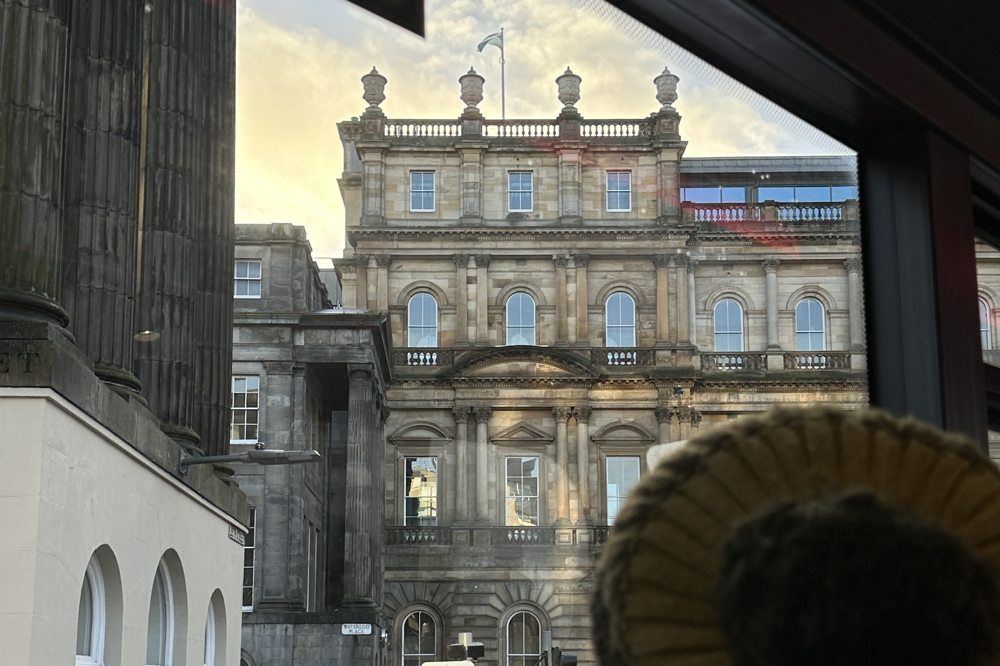

Edinburgh is Scotland's compact, hilly capital. It has a medieval Old Town and elegant Georgian New Town with gardens and neoclassical buildings.

Edinburgh City
Calton Hill
Calton Hill is a volcanic hill rising beyond the eastern end of Princes Street. The hill boasts a collection of some of Edinburgh's most important monuments and offers fantastic panoramic views of the city. In the 19th century, Edinburgh was envisioned as the 'Athens of the North' and Calton Hill was considered Edinburgh's version of the Athenian Acropolis, complete with classical revival architecture.


Edinburgh Castle
Edinburgh Castle is a historic castle in Edinburgh, Scotland. It stands on Castle Rock, which has been occupied by humans since at least the Iron Age, although the nature of the early settlement is unclear. Edinburgh Castle was home to Scotland's crown jewels and the Stone of Destiny, which were used in the coronation of Scottish rulers.